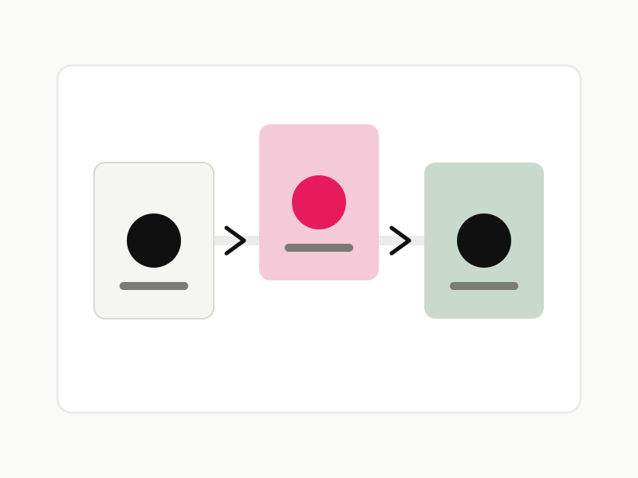

UX Design / Activation
Guided Onboarding
A step-by-step onboarding flow that reduces setup uncertainty and helps new users reach their first successful task faster.
Focus
Reducing friction in early product moments through clearer sequencing, progressive guidance, and more reassuring system feedback.